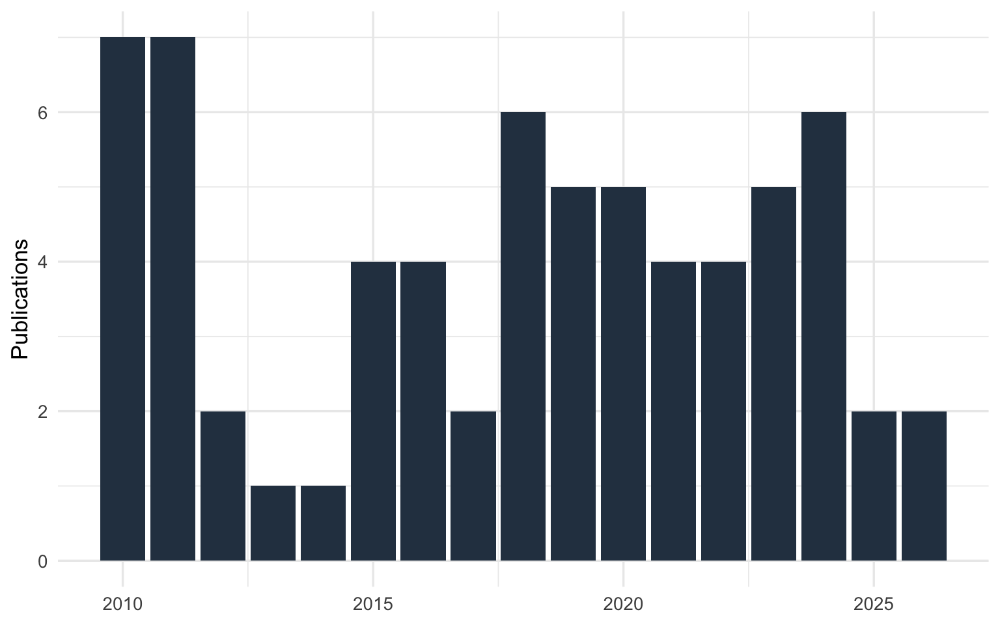
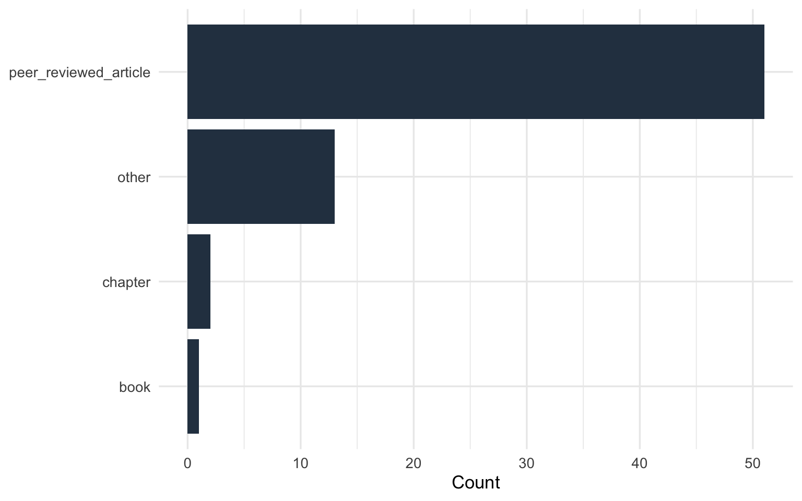
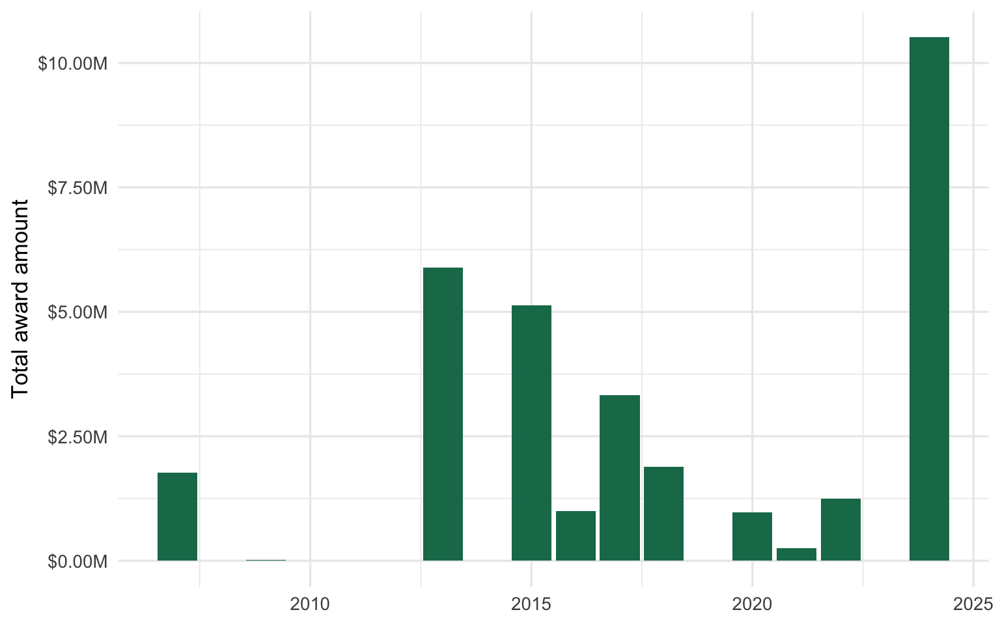

Publications
67
Funded Grants
3
Total Funding
$31,996,020
Presentations
50
Active Mentees
7



Funded (active)
3
Completed
13
PI / Site PI Grants
7
| Title | Role | Sponsor | Award # | Status | Total Cost | Start | End | Effort % |
|---|---|---|---|---|---|---|---|---|
| Detection of Elder mistreatment Through Emergency Care Technicians - Revised for Primary Care (DETECT-RPC) | PI | NIA | R33AG078523 | funded | $4,664,014 | 2024-08-31 | 2027-08-31 | 30 |
| Edward R. Roybal Centers for Translational Research in the Behavioral and Social Sciences of Aging | MPI | NIA | P30AG077109 | funded | $5,850,000 | 2024-08-15 | 2029-05-31 | 25 |
| Detection of Elder mistreatment Through Emergency Care Technicians - Revised for Primary Care (DETECT-RPC) | PI | NIA | R61AG078523 | completed | $1,248,054 | 2022-09-15 | 2024-08-31 | 30 |
| National Collaboratory to Address Elder Mistreatment in the Emergency Department: Phase III | Co-I | JAH | funded | $247,000 | 2021-01-01 | 2027-12-31 | 5 | |
| Building Capacity to Improve Texas Adult Protective Services Financial Exploitation Investigations and Client Services | Co-I | ACL | HHS-2019-ACL-AOA-EJSG-0350 | completed | $974,000 | 2020-01-01 | 2022-12-31 | 10 |
| Leveraging prehospital care to promote older adults’ health and safety: An elder mistreatment training curriculum for emergency medical service providers | Consultant | RRF | 2019-040 | completed | 2019-07-15 | 2021-01-15 | ||
| Detection of Elder abuse Through Emergency Care Technicians (DETECT) | PI | NIA | R01AG059993 | completed | $1,614,750 | 2018-09-15 | 2025-05-30 | 30 |
| Defining Late-Life Poly-victimization and Identifying Associated Mental and Physical Health Symptoms | Co-I | NIJ | 2017-VF-GX-0001 | completed | $271,822 | 2018-01-01 | 2019-12-31 | 10 |
| mHealth to Increase Service Utilization in Recently Incarcerated Homeless Adults | Site PI | NIMHD | R01MD010733 | completed | $3,326,084 | 2017-09-26 | 2024-05-31 | 15 |
| Moving to Improve Chronic Back Pain and Depression in Older Adults (MOTIVATE) | Site PI | VA | VA HSR&D CDA-2 | completed | $996,520 | 2016-10-01 | 2022-04-01 | 30 |
| Technology Enhanced Screening and Supportive Assistance (TESSA) | Co-I | OWH | ASTWH150033-01-00 | completed | $2,199,999 | 2015-08-15 | 2018-07-31 | 10 |
| Workforce Enhancement Healthy Aging and Independent Living (WE HAIL) | Key Personnel | HRSA | completed | $2,550,000 | 2015-07-01 | 2018-06-30 | 10 | |
| Development of a Brief Elder Abuse and Neglect Screener for Emergency Medical Services: Detection of Elder abuse Through Emergency Care Technicians (DETECT) | PI | NIJ | 2014-MU-CX-0102 | completed | $378,519 | 2015-01-01 | 2018-12-31 | 30 |
| Medicaid 1115 Waiver - Texas Health Care Transformation and Quality Improvement Program (Delivery System Reform Incentive Payment Project): Managing Chronically Ill Medicaid Patients Using Interventional Telehealth | PI | CMS | completed | $5,893,112 | 2013-06-01 | 2017-12-31 | 30 | |
| Florida Office on Disability & Health Web-based Health Care Proxy Survey | Key Personnel | FDDC | completed | $14,476 | 2009-01-05 | 2010-06-30 | 50 | |
| Florida Disability & Health Program (state capacity building) | Key Personnel | CDC | U59 DD000273 | completed | $1,767,670 | 2007-07-01 | 2012-03-31 | 50 |
| Year | Title | Journal | Type | Position | Status |
|---|---|---|---|---|---|
| 2026 | Adaptation of DETECT for Use in Home-Based Primary Care: Clinician Perspectives | Journal of the American Geriatrics Society | peer_reviewed_article | last | published |
| 2026 | Changes in Internet Search Term Popularity in Elder Mistreatment (2018-2023): Infodemiology Study of Google Trends Data | Journal of the American Geriatrics Society | peer_reviewed_article | last | published |
| 2025 | How neighborhood socioeconomic status, green space, and walkability are associated with risk for fracture among postmenopausal women | JBMR Plus | peer_reviewed_article | middle | published |
| 2025 | Detection of Elder Abuse Through Emergency Care Technicians Screening Tool Revision for Home-Based Primary Care (DETECT-RPC): a cluster randomised controlled trial study protocol | BMJ Open | peer_reviewed_article | first | published |
| 2024 | Exploring the Association Between Intravenous Lorazepam and Mortality Among Older Hospitalized Patients With and Without Cognitive Impairment | Cureus | peer_reviewed_article | last | published |
| 2024 | Does the primary tumor site drive biology for patients with synovial sarcoma? | American Journal of Clinical Oncology | peer_reviewed_article | middle | published |
| 2024 | Elder Mistreatment Documentation by Prehospital Clinicians: An Analysis of the National Emergency Medical Services Information System Database | Prehospital Emergency Care | peer_reviewed_article | middle | published |
| 2024 | Epidemiological trends of synovial sarcoma by primary tumor sites in the US from 2000 to 2020 | Cancer Epidemiology | peer_reviewed_article | middle | published |
| 2024 | Increasing interest in geriatric medicine through participation of pre-medical students in a specialized HELP program | Journal of the American Geriatrics Society | peer_reviewed_article | middle | published |
| 2024 | A Collaboration Between Adult Protective Services and Forensic Accounting Examiners to Investigate Complex Financial Exploitation: Formative Evaluation Findings | Journal of Elder Abuse and Neglect | peer_reviewed_article | last | published |
| 2023 | Caregiving and All-Cause Mortality in Postmenopausal Women: Findings from The Women’s Health Initiative | Journal of the American Geriatrics Society | peer_reviewed_article | middle | published |
| 2023 | Immunoassay Urine Drug Testing among Patients Receiving Opioids at a Safety-Net Palliative Medicine Clinic | Cancers | peer_reviewed_article | middle | published |
| 2023 | Relations between distress tolerance and psychosocial variables in adults experiencing homelessness | Journal of Social Distress and Homelessness | peer_reviewed_article | middle | published |
| 2023 | The Prevalence and Perceived Utility of Mobile Health Technology Among Recently Incarcerated Homeless Adults | Journal of Technology in Behavioral Health | peer_reviewed_article | middle | published |
| 2023 | R for Epidemiology | Self-Published | book | first | published |
| 2022 | Brain Capital: A transdisciplinary public health framework in the face of an aging society | The American Journal of Geriatric Psychiatry | peer_reviewed_article | middle | published |
| 2022 | Evaluation of Social Isolation, Loneliness, and Cardiovascular Disease Among Older Women in the US | JAMA Network Open | peer_reviewed_article | middle | published |
| 2022 | Acceptability of a real-time notification of stress and access to self-help therapies among law enforcement officers | BMC Public Health | peer_reviewed_article | middle | published |
| 2022 | Popularity of the Delta-8 THC on Internet across US states, 2021 | American Journal of Public Health | peer_reviewed_article | middle | published |
| 2021 | Reliability of the Longitudinal Experts All Data (LEAD) Methodology for Determining the Presence of Elder Abuse | Journal of Elder Abuse and Neglect | peer_reviewed_article | last | published |
| 2021 | The Network Effect on Inter-facility Transfers Among Regional Stroke Certified Hospitals | Journal of Stroke and Cerebrovascular Diseases | peer_reviewed_article | last | published |
| 2021 | The sunscreen for kindergarteners (SKIN) study trial protocol | Contemporary Clinical Trials | peer_reviewed_article | middle | published |
| 2021 | Neglect and Self-Neglect (chapter 8) | In: Geffner R, Vieth V, Vaughan-Eden V, Rosenbaum A, Hamberger LK, White J (Eds) Handbook of Interpersonal Violence Across the Lifespan. National Partnership to End Interpersonal Violence Across the Lifespan (NPEIV). Springer, Cham | chapter | last | published |
| 2020 | Validation of the detection of elder abuse through emergency care technicians (DETECT) screening tool: a study protocol | BMJ Open | peer_reviewed_article | first | published |
| 2020 | Barriers to eating are associated with poor physical function in older women | Preventive Medicine | peer_reviewed_article | middle | published |
| 2020 | EAGLE and DETECT-Innovative Tools Helping First Responders to Combat Elder Abuse | Generations | peer_reviewed_article | first | published |
| 2020 | Evaluation of the DETECT Elder Mistreatment Screening Tool | JAMA Network Open | peer_reviewed_article | first | published |
| 2020 | Socioecological Indicators of Senior Financial Exploitation: An Application of Data Science to 8,800 Substantiated Mistreatment Cases | Journal of Elder Abuse & Neglect | peer_reviewed_article | middle | published |
| 2019 | Characterization and comparison of physical and mental health profiles and Department of Veterans Affairs health care utilization patterns among Operation Iraqi Freedom/Operation Enduring Freedom women veterans in Puerto Rico versus the United States | Women’s Health Issues | peer_reviewed_article | middle | published |
| 2019 | Associations of parental ages at childbirth with healthy aging among women | Maturitas | peer_reviewed_article | middle | published |
| 2019 | Is interpersonal abuse associated with sexual (dis)satisfaction among postmenopausal women? | Women’s Health Issues | peer_reviewed_article | middle | published |
| 2019 | The role of military experience on officer-involved shootings: Towards a constructive research agenda | Journal of Public Health | peer_reviewed_article | first | published |
| 2019 | Pilot Testing the Detection of Elder Abuse Through Emergency Care Technicians (DETECT) Screening Tool: Results from the DETECT Pilot Project | Journal of Elder Abuse and Neglect | peer_reviewed_article | first | published |
| 2018 | Does Military Veteran Status and Deployment History Impact Officer Involved Shootings? | Journal of Public Health | peer_reviewed_article | middle | published |
| 2018 | Parental Longevity Predicts Healthy Ageing Among Postmenopausal Women | Age and Ageing | peer_reviewed_article | middle | published |
| 2018 | Trajectories of Relative Performance Across Two Measures of Global Cognitive Function | Journal of the American Geriatrics Society | peer_reviewed_article | middle | published |
| 2018 | White Paper: First Annual Texas Conference on Elder Financial Abuse and Exploitation | NA | other | last | published |
| 2018 | Alcohol retail sales licenses and sexually transmitted infections in Texas counties, 2008-2015 | The American Journal of Drug and Alcohol Abuse | peer_reviewed_article | middle | published |
| 2018 | Comparing Methods of Misclassification Correction for Studies of Adolescent Alcohol Use | The American Journal of Drug and Alcohol Abuse | peer_reviewed_article | middle | published |
| 2017 | Associations between Self-Reported Physical Activity and Physical Performance Measures Over Time in Postmenopausal Women: The Women’s Health Initiative | Journal of the American Geriatrics Society | peer_reviewed_article | middle | published |
| 2017 | Factors associated with self-estimated breath alcohol concentration among bar patrons | Alcoholism Clinical and Experimental Research | peer_reviewed_article | last | published |
| 2016 | Barriers in Detecting Elder Abuse among Emergency Medical Technicians: A Qualitative Analysis | BMC Emergency Medicine | peer_reviewed_article | middle | published |
| 2016 | Towards the Development of a Screening Tool to Enhance the Detection of Elder Abuse and Neglect by Emergency Medical Technicians: A Qualitative Study | BMC Emergency Medicine | peer_reviewed_article | first | published |
| 2016 | Alcohol mixed with energy drink: use may be a consequence of heavy drinking | Addictive Behaviors | peer_reviewed_article | last | published |
| 2016 | Looming disease burden associated with the aging process: implications for occupational therapy (chapter 3) | In: Barney KF, Perkinson MA (Eds) Occupational therapy with aging adults. St. Louis, USA: Elsevier | chapter | middle | published |
| 2015 | The Disproportionate Prevalence Rate of Prisoners with Disabilities: Evidence from a Nationally Representative Sample | Journal of Disability Policy Studies | peer_reviewed_article | middle | published |
| 2015 | Cross-sectional and longitudinal risk of physical impairment in a cohort of postmenopausal women who experience physical and verbal abuse | BMC Women’s Health | peer_reviewed_article | first | published |
| 2015 | The Cross-sectional Association Between Severity of Non-Cognitive Disability and Self-Reported Worsening Memory | Disability and Health Journal | peer_reviewed_article | first | published |
| 2015 | Self-efficacy to drive while intoxicated: Insights into the persistence of alcohol-impaired driving | Alcoholism Clinical and Experimental Research | peer_reviewed_article | middle | published |
| 2014 | U.S. population estimates and correlates of sexual abuse of community-dwelling older adults | Journal of Elder Abuse & Neglect | peer_reviewed_article | first | published |
| 2013 | Tobacco in Florida: comparisons between adults living with and without disabilities | Disability and Health Journal | peer_reviewed_article | middle | published |
| 2012 | Association of blood cotinine level with cognitive and physical performance in older adults | Environmental Research | peer_reviewed_article | middle | published |
| 2012 | Doubly robust testing and estimation of model-adjusted effect-measure modification with complex survey data | Statistics in Medicine | peer_reviewed_article | middle | published |
| 2011 | Breast Cancer Screening and Healthcare Access Among Women Living with Disabilities in Florida | Florida Office on Disability and Health | other | middle | published |
| 2011 | Disability Perceptions and Experiences in the State of Florida: 2010 Florida Behavioral Risk Factor Surveillance System (BRFSS) | Florida Office on Disability and Health | other | first | published |
| 2011 | Adult disability prevalence: 2010 Florida Behavioral Risk Factor Surveillance System | Florida Office on Disability and Health | other | first | published |
| 2011 | Results of a proxy respondent web-survey of Florida adults with disability: 2009-2010 | Florida Office on Disability and Health | other | first | published |
| 2011 | Age group differences in health care access for people with disabilities: Are young adults at increased risk? Results from the Florida Behavioral Risk Factor Surveillance System | Journal of Adolescent Health | peer_reviewed_article | first | published |
| 2011 | Results of a web-survey of Florida adults with disability: 2009-2010 | Florida Office on Disability and Health | other | first | published |
| 2011 | Disability and access to health care in Florida: Results from the 2009 behavioral risk factor surveillance system | Florida Office on Disability and Health | other | middle | published |
| 2010 | Tobacco use and correlates: A comparison of Floridians living with and without disabilities | Florida Office on Disability and Health | other | first | published |
| 2010 | Breast cancer screening patterns among women with disabilities in Florida, 2007-2008 | Florida Office on Disability and Health | other | first | published |
| 2010 | Testing & estimating model-adjusted effect-measure modification using marginal structural models & complex survey data | American Journal of Epidemiology | peer_reviewed_article | middle | published |
| 2010 | Caregiving and older Floridians | Florida Office on Disability and Health | other | first | published |
| 2010 | County-level demographics, health characteristics and health behaviors of Florida residents aged 60 and over: Results from the 2007 Behavioral Risk Factor Surveillance System | Florida Office on Disability and Health | other | first | published |
| 2010 | Interim report: A web-based survey of the health of Floridians with disabilities | Florida Office on Disability and Health | other | middle | published |
| 2010 | Access to health care and health behaviors among young adults with and without disability in Florida: A report from the Florida Behavioral Risk Factor Surveillance System 2007 | Florida Office on Disability and Health | other | first | published |
Ongoing Courses
1
Active Mentees
7
Active Service Roles
3
| Institution | Course | Since | Role |
|---|---|---|---|
| Texas Christian University | HCHS 80313 — Introduction to R Programming and Data Management | 2026 | instructor-of-record |
| Mentee | Role | Context | Since |
|---|---|---|---|
| Tim Clark | primary-advisor | PhD | 2022 |
| Michelle Pennington | primary-advisor | PhD | 2022 |
| Rebecca Molsberry | primary-advisor | PhD | 2024 |
| Rania Abdelkhaleq | ra-ta-intern | PhD | 2024 |
| Cailyn Meyer | ra-ta-intern | MS | 2026 |
| Duy Anh Nguyen | ra-ta-intern | MBA | 2026 |
| Rowan Schlotterbeck | ra-ta-intern | Undergraduate | 2026 |
| Organization | Role | Category | Since |
|---|---|---|---|
| Texas Elder Justice Coalition | Member | community | 2024 |
| Tarrant County Adult Protective Services Community Board | Member | community | 2019 |
| TCU Departmental Promotion and Tenure Committee | Chair | university | 2025 |
| Journal | Type |
|---|---|
| Journal of Elder Abuse and Neglect | editorial-board |
| Journal of the American Geriatrics Society | ad-hoc-reviewer |
| Journal of Aging and Health | ad-hoc-reviewer |
| Journal of Elder Abuse and Neglect | ad-hoc-reviewer |
| Journal of Gerontology: Medical Sciences | ad-hoc-reviewer |
| Journal of Adolescent Health | ad-hoc-reviewer |
| Disability and Health Journal | ad-hoc-reviewer |
| Nicotine & Tobacco Research | ad-hoc-reviewer |
| Infectious Diseases in Obstetrics and Gynecology | ad-hoc-reviewer |
| Alcoholism Clinical and Experimental Research | ad-hoc-reviewer |
| Journal of Public Health | ad-hoc-reviewer |
| Aggression and Violent Behavior | ad-hoc-reviewer |
| rOpenSci | software-reviewer |